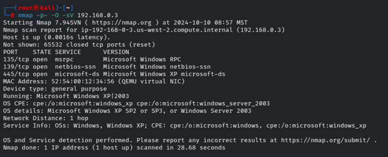
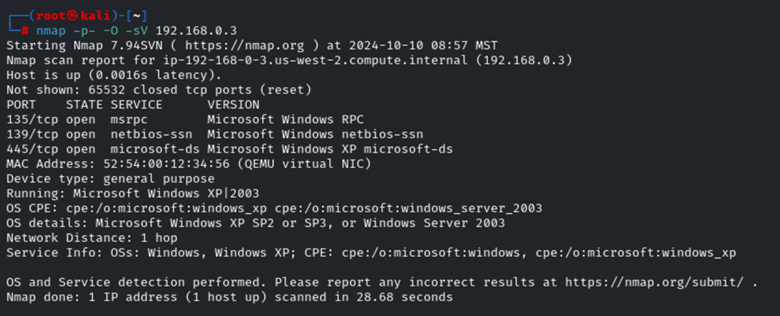

Executive Summary
This report documents a controlled penetration testing engagement (ITT-340). Scans and lab-only exploit demonstrations were performed against isolated virtual machines to illustrate typical threats: outdated services, weak encryption, and misconfigurations. The exercises validated potential unauthorized access and persistence in a sandbox environment. Recommended next steps emphasize patching, hardening, access control, and monitoring.
Document Properties & Versioning
| Version | Date | Author | Notes |
|---|---|---|---|
| 1.0 | 10/04/2024 | Brady Reid | Initial OSINT & Recon |
| 1.2 | 10/05/2024 | Brady Reid | Automated Recon |
| 1.3 | 10/12/2024 | Brady Reid | Nmap Scanning |
| 1.4 | 10/20/2024 | Brady Reid | OpenVAS Assessment |
| 1.5 | 10/29/2024 | Brady Reid | Exploit Demos |
| 2.0 | 11/03/2024 | Brady Reid | Custom Payload Summary (redacted) |
Disclaimer
LAB ONLY — All actions were performed in isolated virtual machines under educational permission. The public report omits command-level exploit steps and payload details. Sensitive logs and technical appendices are kept in a secure, instructor-approved record.
Passive OSINT
Summary: Public information about the selected organization (Discount Tire) was collected using MXtoolbox, Whois, LinkedIn, Sublist3r, and similar tools. Findings included DNS records, subdomains, executive contact patterns, and public document metadata.
Recommendations: Audit public-facing content, sanitize document metadata, limit social exposure, and implement DMARC/DKIM for email protection.
Automating Reconnaissance
Summary: Tools such as SpiderFoot, DNSenum, Metagoofil, and Sherlock were used to aggregate hidden or less-obvious public data (document metadata, additional domains, username re-use across platforms).
Recommendations: Periodic scanning for data leakage, remove stale public artifacts, and enforce data retention policies for public resources.
Nmap Scanning
Summary: Nmap scans against lab VMs identified open ports and services including FTP, SSH, HTTP, Samba, MySQL, and PostgreSQL. OS fingerprinting indicated legacy Windows Server/XP systems on one host.
Findings & Recommendations: Upgrade EOL systems (e.g., Windows XP/Server 2003), update Apache/MySQL versions, and restrict management ports (SSH, RDP) through firewall rules or VPN-only access.
OpenVAS Vulnerability Assessment
Summary: OpenVAS flagged high to low severity issues: EOL OS, weak SSH algorithms, cleartext HTTP, TCP timestamp disclosure, and ICMP timestamp replies.
Remediations: Reconfigure SSH to modern algorithms (ED25519, ECDH, HMAC-SHA2), migrate HTTP services to HTTPS, disable TCP/ICMP timestamps where possible, and replace EOL systems with supported OS versions.
Exploitation — High Level (Lab-only)
Using Metasploit in an isolated lab, several vulnerabilities identified during scanning were exercised to validate impact. Demonstrations included remote code execution on a vulnerable web application, privilege escalation on a legacy Windows VM, and exploitation of a Samba misconfiguration to access shared data. Command-level steps and payload generation are intentionally omitted.
Security Controls Suggested: Patch critical vulnerabilities, apply strict ACLs for file shares, remove or isolate legacy systems, and enable endpoint detection & response (EDR).
Custom Payload — Summary (Redacted)
A custom reverse-TCP payload was created and tested in the lab to demonstrate persistence risk. The public report does not reproduce the payload generation commands. All such artifacts are secured in the instructor-approved lab notebook.
Recommendation: Harden host defenses, implement application whitelisting, and monitor for suspicious outbound connections.
Findings — Consolidated
- Outdated operating systems and services present a high risk.
- Weak or deprecated cryptographic settings increase exposure.
- Cleartext services may allow interception and data leakage.
- Misconfigured file shares can lead to data access and exfiltration.
Recommendations — Priority Plan
- Immediate: Patch critical vulnerabilities and isolate EOL hosts.
- Short-term (1–3 months): Harden SSH/TLS, restrict management ports, and enforce least privilege.
- Medium-term: Deploy centralized logging and EDR; schedule recurring vulnerability scans.
- Long-term: Implement security policy updates and conduct periodic penetration testing.
Evidence (Lab Screenshots)


 


Screenshots captured from an isolated lab environment. Filenames should match images in the repository root.
Appendix & Technical Notes
This public page deliberately omits step-by-step exploitation commands and payloads. The full technical appendix (including sanitized logs and instructor-approved details) is archived in a secure lab notebook. For instructor access or review, contact the author directly (see contact panel).